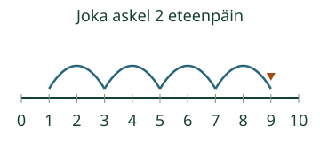
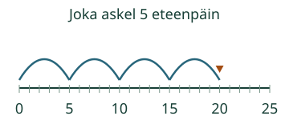

Loikka kokeilee pitkää askelta.
Tunnistan samanpituiset askeleet ja jatkan lukujonoa.
Sama askel joka kerta
Valitse askel.
Reitti ja toisto
Paina yhtä askelta tai valitse toinen reitti. Saat kokeilla heti.
Kaksi kerrallaan myös yhdestä
1, 3, 5, 7, 9. Jokainen luku on kaksi edellistä suurempi. Tasavälinen jono voi alkaa muualtakin kuin nollasta.

Kasvava jono ei aina ole tasavälinen
1, 2, 4, 7 kasvaa ensin yhden, sitten kaksi ja sitten kolme. Askeleet eivät ole samanpituiset. 0, 5, 10, 15, 20 taas kasvaa joka kerta viisi.

Mieti: jono on 2, 5, 8. Onko seuraava luku 9 vai 11?
Katso ajatus
11. Jokainen askel lisää kolme, joten kahdeksasta jatketaan kolme eteenpäin. Pelkkä seuraavan suuremman luvun valitseminen ei säilytä sääntöä.
Kokeile oma vastaus
Joka askel on kaksi. Kirjoita kaksi seuraavaa lukua.
Apua
Katso kahta peräkkäistä lukua. Kuinka monta yhden väliä niiden väliin jää? Tarkista sama väli seuraavassakin kohdassa. Malli ja säännön sanat saa pitää näkyvissä.
Tutki lisää
Vertaa reittejä 0, 2, 4, 6 ja 1, 3, 5, 7. Askelen koko on sama, mutta lähtöpaikka on eri. Kaikki tasaväliset jonot eivät ole saman luvun nollasta alkavia monikertajonoja.
Lopuksi: Jatka samalla askeleella: 3, 6, 9, … Mikä on askelen koko?
Opettajalle ja ilman ruutua
Vaihda reittiä: mikä pysyy samana?
Lukusuoran yhden numerovälin pituus pysyy samana. Osoitin näyttää paikan; liike ei mittaa fyysistä hyppyä. Ei automaattista toistoa.
Luokat 1–2. Vaadittu esitieto on M-NUM-07. Numerot, askelsääntö ja mallin sanat annetaan tässä; ei uutta puhe-, esineiden nimeämis- tai laskutoimitusmerkkien porttia. Aikuinen voi lukea. Tuki ja malli ovat vapaaehtoisia.
Piirrä yhden välein numeroitu polku. Näytä yhtä suuri kahden tai viiden väli eri kohdista. Tee myös jono, jossa väli vaihtuu. Tarkista välit, älä vain sitä, kasvavatko luvut.
Tuettu tunnistus ja kahden luvun jatko eivät osoita kaikkien lukujonojen sääntöjen hallintaa tai kertotaulumuistia. Tässä tasavälisyys tarkoittaa samaa positiivista lisäystä; ei kaikkia matemaattisia jonoja eikä negatiivisia lukuja. Paikallinen harjoitus ei myönnä formaalia peli- tai prosessihallintaa, henkilökohtaista osaamismerkintää tai oppilaan itsenäisyysarviota. Ei tallennusta, aikarajaa tai vaikuttavuusväitettä.